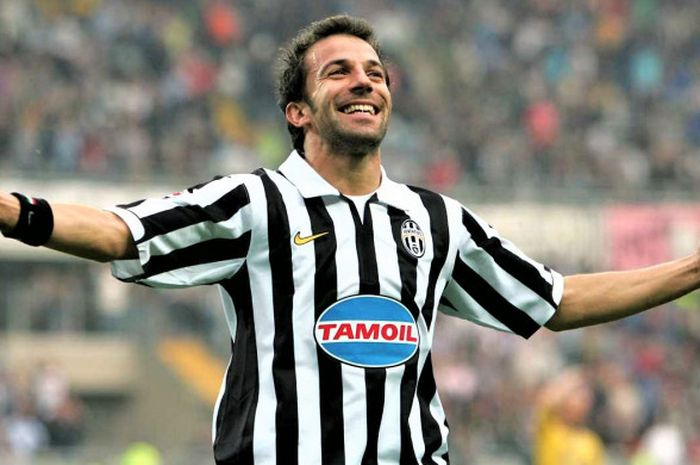
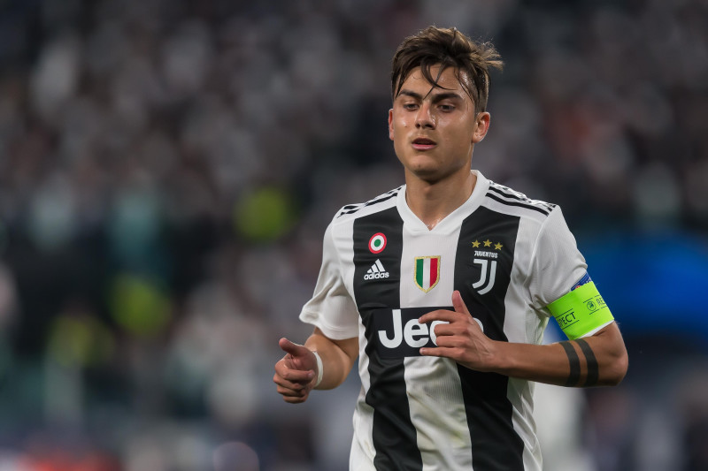
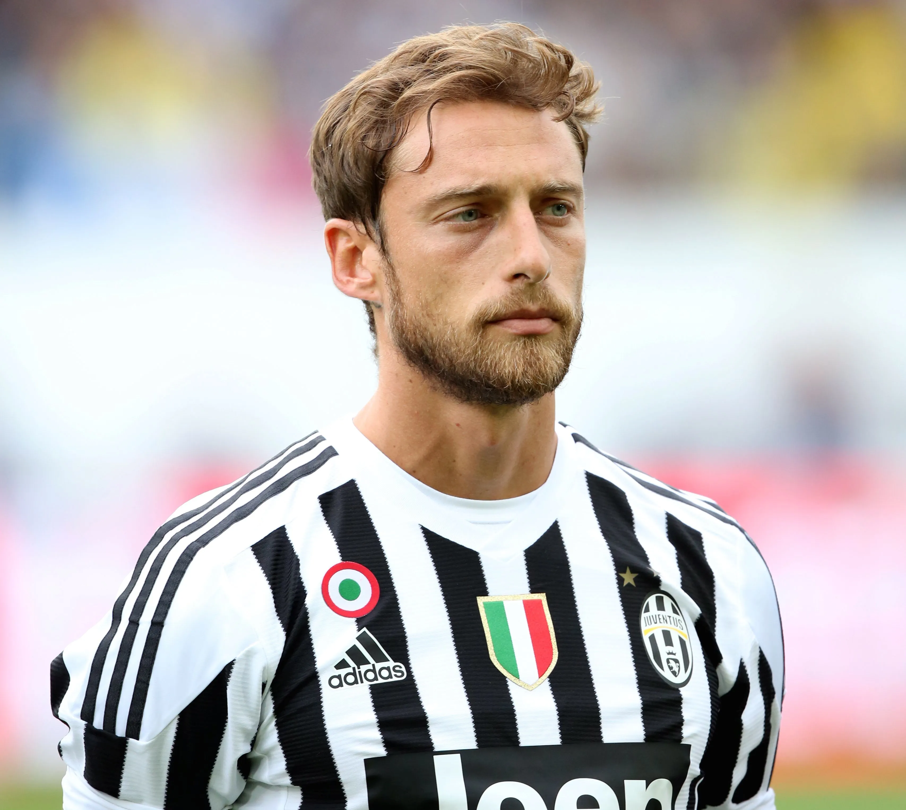

Alessandro Del piero
Mest känd är han för tiden i Juventus som han spelade 513 ligamatcher för, och gjorde 208 ligamål. Han lämnade Juventus som han tillhört sedan 1993 efter att ha vunnit scudetton 2011/2012 och är den spelare som spelat flest matcher för laget. Han har blivit italiensk mästare och vunnit Champions League och blivit världsmästare med Italien 2006. Alessandro Del Pieros smeknamn är Pinturicchio efter den italienske målaren vilket anspelar på att även han har konstnärliga talanger och gör mästerverk. Namnet fick han av klubbens dåvarande ägare Gianni Agnelli.


Paulo Dybala
Sommaren 2015 köpte Juventus Dybala för omrking £32,000,000 (plus €8,000,000 i tillägg).[4] Hans första match spelade han mot Lazio i Supercoppa italiana. Juventus vann matchen 2-0 och Dybala gjorde även sitt första mål för klubben.
Efter han påbörjade sin karriär i Argentina med Instituto i 2011, flyttade han till Italienska klubben US Città di Palermo 2012. [2] Hans första mål för Palermo kom emot Sampdoria i Serie B.[3] Redan innan Dybala hade skrivit på för Palermo, var det många som jämförde honom med Sergio Agüero. Dybala var inte nöjd med denna jämförelse, då han avlägsade sig från dessa jämförelser. “I like to be considered Paulo Dybala and that is all. I don’t want comparisons with Agüero.”[1] Dybalas sista mål för klubben kom emot AC Milan, den 4 mars 2015 i Serie A.
Claudio Marchicio
Marchisio kom till Juventus 1993 där han till en början spelade som anfallare. Det var inte förrän han var 16 år som han flyttades ner till mittfältet. Under säsongerna 2004/2005 och 2005/2006 kallades han upp för att träna med A-laget flera gånger och managern Fabio Capello gav honom dessutom ett tröjnummer. Första matchen han blev uttagen var en match mot Cagliari men han fick ingen speltid.
Efter att ha fått mycket speltid i träningmatcherna inför säsongen 2006/2007 fick Marchisio en plats i A-laget, delvis på grund av Serie A-skandalen som gjorde att Juventus flyttades ner till Serie B och flera av lagets tongivande spelare såldes. 19 augusti 2006 gjorde Marchisio sin debut i Coppa Italias tredje omgång när han fick hoppa in i 3-0-vinsten över Martina. Ligadebuten gjorde han 28 oktober mot Frosinone efter att ha bytt av David Trezeguet. Första matchen från start gjorde han omgången därefter mot Brescia. Allt eftersom säsongen fortskred så fick Marchisio mer och mer speltid. I matchen mot Arezzo gjorde han en assist, matchen slutade med vinst 5-1, vilket resulterade i att Juventus var klara för spel i Serie A kommande år.
